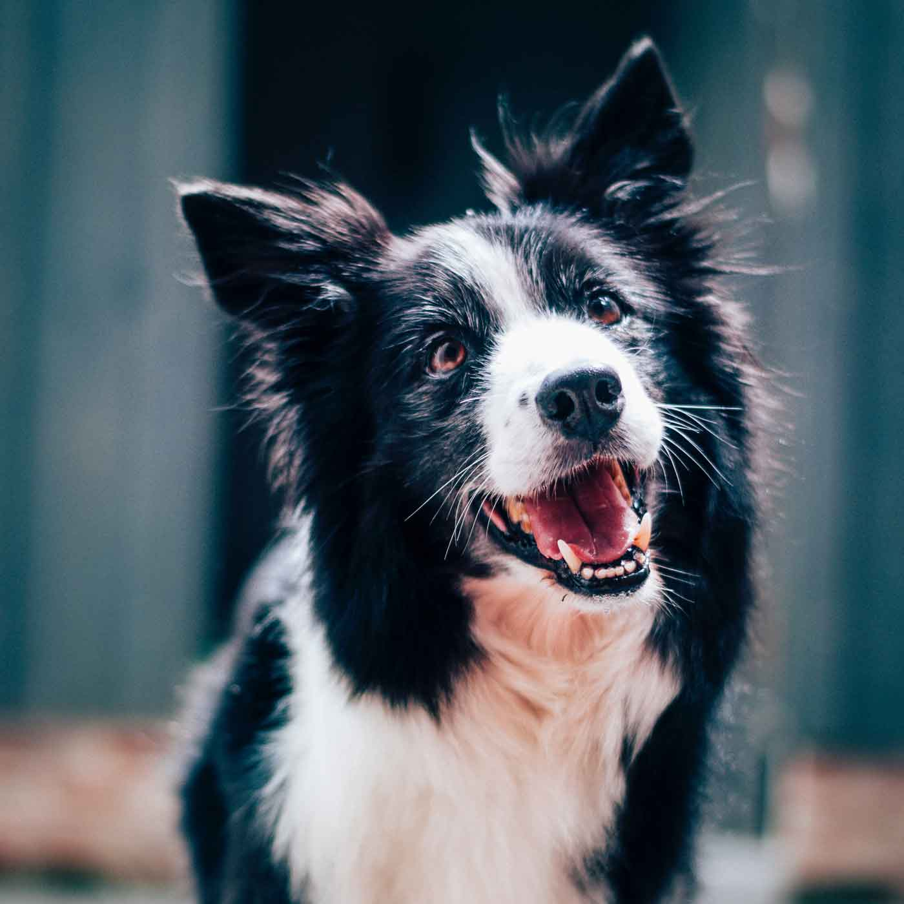
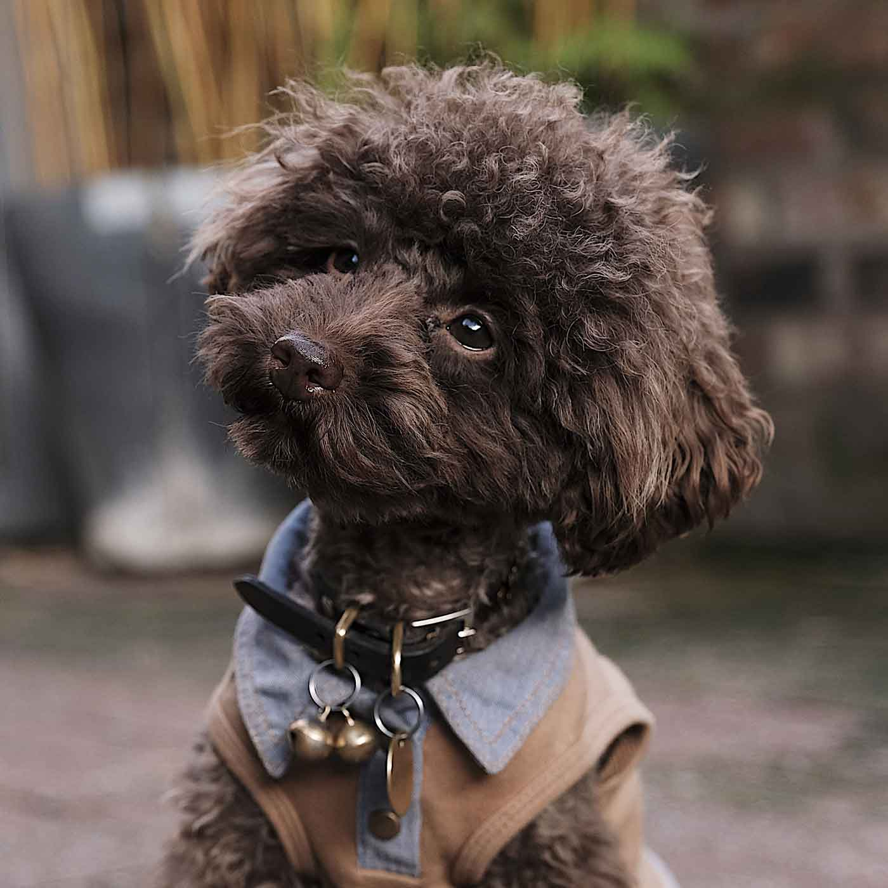

Loyal Rescue is a non for profit, volunteer rescue organization dedicated to saving homeless dogs.
Available Rescues
These dogs desperately need a new home.
-

Annie
Annie is a spunky girl looking for a new home.
-

Pixie
Pixie is an enthusiastic girl who loves to play fetch.
-

Oliver
Oliver loves a good nap.
Contact
- Loyal Rescue
- 1027 Window Way
- Ottawa, ON
- H6V 7B1
- Canada
- contact@loyalrescue.ca
- 555-555-5555